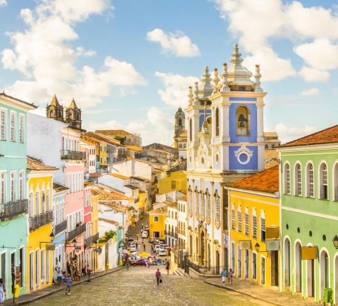

-
Porto alegre

Porto Alegre é a capital do estado de Rio Grande do Sul, no sul do Brasil. Na praça principal, a Praça Marechal Deodoro, encontra-se a Catedral Metropolitana, de estilo renascentista, com murais religiosos no exterior. O Palácio Piratini, de estilo neoclássico, é a sede do governo estadual. O Theatro São Pedro, do século XIX, fica nas proximidades. A cidade é conhecida como uma porta de entrada para os enormes desfiladeiros do Parque Nacional de Aparados da Serra.
A partir de R$ 1.200,00
-
Salvador
Salvador, a capital do estado da Bahia no nordeste do Brasil, é conhecida pela arquitetura colonial portuguesa, pela cultura afrobrasileira e pelo litoral tropical. O bairro do Pelourinho é seu coração histórico, com vielas de paralelepípedo terminando em praças grandes, prédios coloridos e igrejas barrocas, como São Francisco, com trabalhos em madeira revestidos com ouro.
A partir de R$ 1.400,00
-

Belo Horizonte
Belo Horizonte é a capital do estado de Minas Gerais, no sudeste do Brasil. Rodeada de montanhas, a cidade é conhecida pelo enorme Estádio Mineirão. Construído em 1965, o estádio alberga também o Museu Brasileiro do Futebol. Nas proximidades encontra-se a Lagoa da Pampulha e o Conjunto Arquitetónico da Pampulha, que inclui a Igreja de São Francisco de Assis, cujo teto é ondulado e que foi concebida pelo arquiteto modernista brasileiro Oscar Niemeyer.
A partir de R$ 1.000,00
-

São Paulo
São Paulo, centro financeiro do Brasil, está entre as cidades mais populosas do mundo, com diversas instituições culturais e uma rica tradição arquitetônica. Há prédios simbólicos como a catedral neogótica, o Edifício Martinelli, um arranha-céu inaugurado em 1929, e o Edifício Copan, com suas linhas curvas projetadas pelo arquiteto modernista Oscar Niemeyer. A igreja em estilo colonial do Pátio do Colégio marca o local onde os padres jesuítas fundaram a cidade em 1554.
A partir de R$ 1.700,00